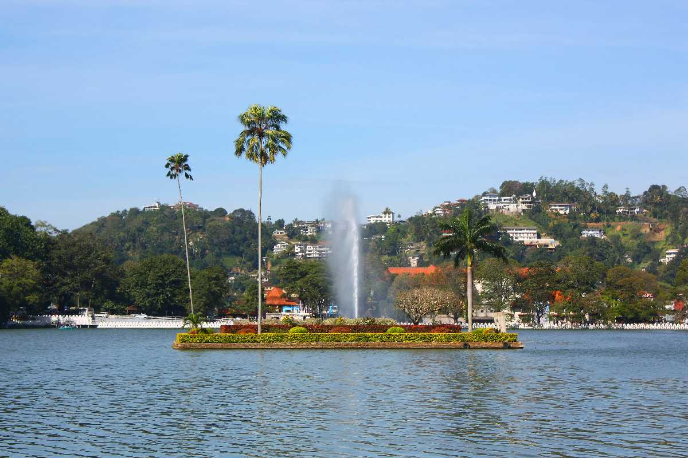

Temple Of Tooth Relic – For Spiritual Enlightenment

Considered as one of the most important temples of Buddhists in Sri Lanka, the Temple of Tooth Relic is located to the north of Kandy Lake and is one of the most remarkable places to visit in Kandy Sri Lanka. The sacred tooth of Lord Buddha enshrined in the temple makes it one of the popular Kandy tourist p/laces. The room housing the tooth is open to devotees to offer their prayers. However, nobody gets to see the tooth because it is kept in a golden casket inside a stupa-like structure. The temple is housed in the royal palace complex of the former Kingdom of Kandy. One of the best places to see in Kandy, this temple is of great importance due to the belief of the country on the tooth. The temple has rituals thrice a day. The temple was designated a UNESCO World Heritage Site 1988. The temple still stands strong even after facing attacks twice. Along with the outside, tourists need to visit the inside of the temple to actually appreciate the architecture. There are holes in the walls which contain lamps lit using coconut oil. Tourists need to pay the entry fees and they should visit between 5:30 AM and 8:00 PM.
Kandy Lake – Best Place To Stroll Around
Adjoining most of the popular tourist places in Kandy and eateries with lake view, the Kandy Lake is certainly among the best places to visit in Kandy, Sri Lanka. An ideal place to spend hours during your lazy vacation, the lake offers stunning nature views around it and is a perfect romantic sojourn for a romantic couple visiting the place. The lake, existing since 1807, has a flurry of idyllic places and historical structures around. The lake is also known as the Kiri Muhuda or the Sea of Milk and is an artificial lake. Being in the heart of the city and beside some of the famous attractions of Kandy, it is a popular tourist site. There is also an island in the middle of the lake. Around the lake is built the Wakulla Bamma or the Clouds Wall which increases the beauty of it. If you are in Kandy visiting places, tourists can also see the Ulpan or Queens Bathing Pavilion which is a party in the Kandy Lake.
Hulu River Waterfall – A Sight To Behold

30 km from Kandy into the quiet town of Dumbara lies Huluganga Falls on the Hulu River. The river originating from the scenic Knuckles Mountain Range is the perfect escape to leave the onlookers awed. The 75-meter high waterfall, located in the Dumbara town, is a-true beauty enclosed by nature allure. And it’s no wonder that-Hulu is considered as one of the popular Kandy places to visit! The Huluganga falls still maintains its pristine condition because of its natural setting. When visiting places in Kandy, make sure you add this one to your itinerary. Tourists will definitely enjoy the numerous rocks present in the bed of the waterfall. If they are feeling adventurous they can click pictures sitting on them. When looking for places to visit near Kandy, then don’t forget to stop by this majestic waterfall.
Knuckles Mountain Range – Hiking And More

This is one of the top places to visit in Kandy Resembling the shape of a knuckle of a clenched fist from the top, the Knuckles Mountain Range is probably one of the most scenic Kandy tourist attractions. The mountain Range in the region towards the northern end of Sri Lankan highlands (39 km from Kandy) is the place to be. Perfect place to try your hands-on adventure traveling and camping, the Knuckles Mountain Range spans from Matale to Kandy and is a treat for the nature lovers. Look around and embrace the wilderness brought to you by sprawling grasslands, jagged peaks, torrents of streams, and gushing waterfalls. Enjoy the series of painted canvas around. The best view of the range is the thick clouds that gather in the higher Montane area. Hiking is considered to be one of the best things to do in Sri Lanka. Adventurous tourists can try their hands at hiking to visit the cloud forests which house a lot of the flora and fauna of the place. They are mostly unique to the place and you cannot find them in the rest of the island country. If you want to reach the highest point of the terrain, then you need to climb 1863 m above the sea level. Another key wildlife attraction of the place are lizards which include the unique Crestless lizard, Kangaroo lizard, and Pygmy lizard. People who want to enjoy serious trekking may take part in the 3-day guided trekking tour which lasts for more than 40 KM and takes them through some of the main areas. This mountain range is undoubtedly considered to be one of the best places to visit in Kandy The great biodiversity of the Knuckles brings you wild boar, spotted deer, giant squirrel, barking deer, purple-faced leaf monkey, and mongoose.
Hanthana Mountain Range

The Hanthana Mountain Range lies in central Sri Lanka, south-west of the city of Kandy. It was declared as an environmental protection area in February 2010 under the National Environment Act. The maximum height of the range is 3800 ft. The mountain range consists of seven peaks. The highest one being the Uura Kanda.